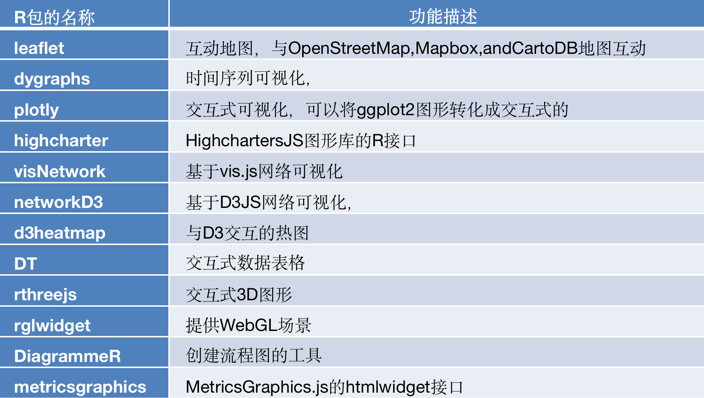

4 认识交互式绘图工具
前面可视化的结果就是一个静态的图形，所有信息都一目了然地放在一张图上。
静态图形适合于分析报告等纸质媒介，而在网络时代，如果在网页上发布可视化，那么动态的、交互的图形则更有优势。
在R的环境中，动态交互图形的优势在于能和knitr，shiny等框架整合在一起，能迅速建立一套可视化原型系统。
由于pdf不支持html有关的图形输出，这里只给代码，可以自行运行，查看结果。
注意：提前安装好相应的包。
htmlwidgets包，这是一个专为R语言打造的可视化JS库，只需要编写几行R语言代码便可生成交互式的可视化页面。目前已经有基于htmlwidgets制作的R包可供直接调用，具体名称及对应作用见表

4.1 leaflet包
library(leaflet)
leaflet() %>% addTiles() %>% addMarkers(lng = 174.768, lat = -36.852, popup = "ThebirthplaceofR")4.2 dygraphs包
library(dygraphs)
lungDeaths <- cbind(mdeaths, fdeaths)
dygraph(lungDeaths)4.3 plotly包
library(plotly)
pal <- RColorBrewer::brewer.pal(nlevels(iris$Species), "Set1")
plot_ly(data = iris, x = ~Sepal.Length, y = ~Petal.Length, color = ~Species, colors = pal,
mode = "markers")p <- ggplot(iris, aes(x = Sepal.Length, y = Petal.Length, colour = Species)) + scale_color_brewer(palette = "Set1") +
geom_point()
ggplotly(p)4.4 DT包
library(DT)
datatable(iris)4.5 networkD3包
library(networkD3)
src <- c("A", "A", "A", "A", "B", "B", "C", "C", "D")
target <- c("B", "C", "D", "J", "E", "F", "G", "H", "I")
networkData <- data.frame(src, target)
simpleNetwork(networkData, zoom = T)data(MisLinks)
data(MisNodes)
forceNetwork(Links = MisLinks, Nodes = MisNodes, Source = "source", Target = "target",
Value = "value", NodeID = "name", Group = "group", opacity = 0.8)4.6 利用Shiny包实现可交互的Web应用（待补充-更新可见公众号）
shiny的官网包含了非常多的内容，包括详细教程，案例等。网站地址如下：